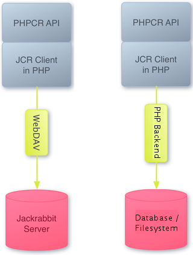

Jackalope is an open source PHP implementation of the PHPCR API, which is a PHP adaption of the Java Content Repository (JCR) standard, an open API specification defined in JSR-170/283. Jackalope's test-driven development aims to provide full client functionality for Apache Jackrabbit, the JCR reference implementation as well as being a base to build a full PHP Content Repository with no Java backend involved.
Jackalope thus builds a bridge between the Content Repository as a critical piece of enterprise IT (i.e. the Java world) and the world of agile web development with PHP. This best-of-breed approach offers enterprises a unique way to sustainably connect to today's largely PHP-driven world of social media, mashups and to a wide area of lean, light-weight frontend technologies.
The Java Content Repository standard provides a sustainable, long-term interface for accessing document stores in a uniform manner. These content repositories provide the foundation of a flexible modern content management architecture. A content repository is like a file system, but keeping content together with meta data and provides common services such as versioning, powerful query and selection mechanisms, access control or search. The standard is supported by a wide range of enterprise content management system vendors and infrastructure players such as the Apache Foundation, Day, IBM, Oracle, SAP, Open Text and many more.

We currently work on write support to complete the API. Release of a beta Jackalope with Jackrabbit backend is planned for end of 2010.
Once the Java binding is fine, we can start working on a pure PHP backend that allows to use PHPCR without any Java component. This will probably not be as performant as the Java binding, but should be good enough for small sites running on servers without the possibility to install Java. With upcoming JSR-333, there might be a native backend daemon for JCR that Jackalope could talk to, being even more performant than our current setup with Jackrabbit setup while at the same time being even easier to set up.
There is extensive API testing and unit testing, telling what does work and what not:
A list of open tasks is here: https://jira.liip.ch/browse/JACK
You can download this the latest source of project in either zip or tar formats.
You can also clone the project with Git by running:
$ git clone git://github.com/jackalope/jackalope
There also is a rendered api - documentation available. This also includes the api of the depending PHPCR project.